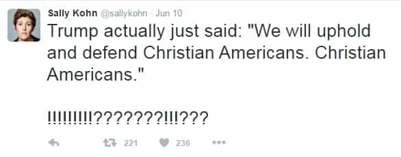
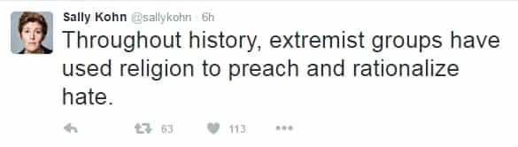
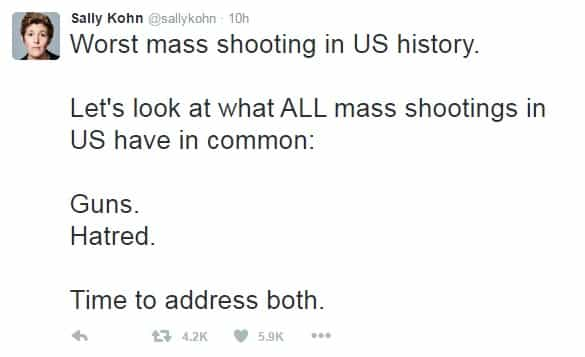
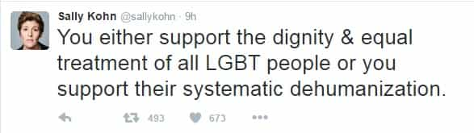
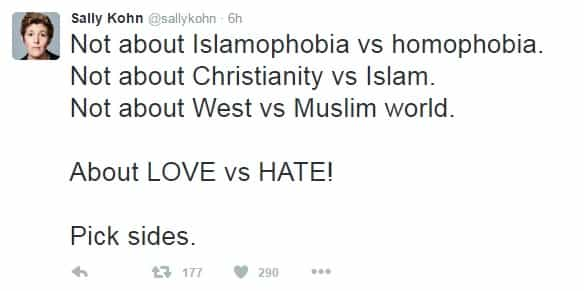
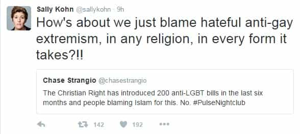
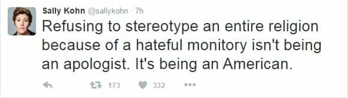
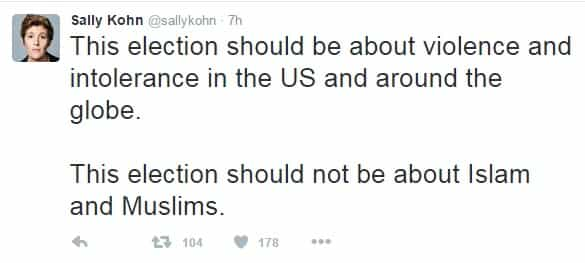

John Carver is a four year ROK veteran with over fifty articles of SJW-triggering truth bombs on archive. You can follow him on Twitter if you are so inclined.


Sally Kohn is a lawyer, political commentator, and “community organizer” (professional agitator) who worked extensively with the National LGBTQ Task Force and regularly appears on CNN.
A secular Jew, ardent supporter of Hillary Clinton, and lesbian to boot, it should come as a surprise to nobody that she is also a militant feminist.
Kohn is perhaps most famous for inciting controversy in February 2015, when she wrote an article stating that she wants her daughter to grow up to be a lesbian like her. However, Sally was disappointed that she was… wait for it… starting to show a romantic interest in boys.

The horror right? Since Ms. Kohn metaphorically dwells in a living cuckoo clock where heterosexuality is discouraged rather than embraced, it is clear that logic and reason are not her particular strong points.
In the wake of the Pulse night club shooting in Orlando, I noticed that her Twitter feed was unloading a series of messages which were so full of various fallacies that I decided to start an educational series addressing SJW’s and their questionable Twitter logic. Sally will be the first inadvertently helpful teaching assistant, but others will inevitably follow.

Sally is clearly butt-hurt that Donald Trump actually wants to stick up for the dejected and increasingly derided majority of the U.S. population. This stands in great contrast to her cultural Marxist narrative, where the needs and demands of distinct minorities (gays, transgenders, Muslims, etc.) are championed at the expense of a classic Western tradition which she clearly despises: Christianity.

Sally is upset that a member of a religion she champions under her social justice narrative (Islam) has caused the biggest mass shooting in U.S. history. Therefore, Sally is making an unsuccessful attempt to save face by using the distant past to try and implicate other religions, such as Christianity during the Middle Ages (Crusades, Inquisition, etc.)
What Sally does not realize is that since the late 20th and early 21st centuries, the lions share of high death toll terrorist or “hate” attacks where religion played a major role, have been caused by Muslims. The statement she is making is almost entirely irrelevant to a major and growing crisis of the 21st century. Radical Islam.

Sally is taking a very small cluster of data (and “hatred” is highly debatable as a form of data) to advance her leftist narrative of putting blame squarely on guns, rather than addressing many other factors which are commonplace in mass shootings.
For instance, Muslims make up barely over one percent of the U.S. population, but have been responsible for a very large number of mass shooting related deaths in recent years. If even just 20% of mass killings were caused by Muslims, that would be an amount so widely disproportionate to their population that it would be socially and academically irresponsible to not warrant attention.

False dilemmas or “black-and-white thinking” do not allow for many different variables or conditions to exist. For instance, in this tweet, Sally has put forth an argument where just two possibilities exist in regards to how the general public supports LGBT people.
However, there are many more options available in regards to how everyday citizens can treat LGBT issues. Indifference for example, and just wanting to get on with their lives without having cultural Marxist hogwash beating in their eardrums all year long.
what me worry?
We see it here again:

Again, Sally is creating a false dilemma where only two options exist, when in fact there are many more available. For instance, logic and reason is a side which should be promoted, but instead she is merely arguing for impotent emotional gestures and continued cultural ignorance as a way to address mass killings. Lame.

Unfortunately, Sally does not realize that many times the awful truth does indeed find itself positioned at just one of two extreme points. Being half way between the truth and a lie, is still a lie.
What is the awful truth? The awful truth is that Islam is far more intolerant and hostile towards homosexuality than anything modern day Christianity, Judaism, Buddhism, Hinduism, or Shintoism could conjure. Yet Sally wants to equally implicate them all for anti-gay extremism, at the expense of inadvertently defending the one religion which truly despises her sexual preferences and lifestyle to the point of imprisonment or death (outside of western nations). Islam.
Even the Westboro Baptist Church is mostly just retarded hate-speech dialogue directed towards gays. Last time I checked, words never actually killed anybody.

“No True Scotsman” is an appeal to a sense of purity in order to dismiss factual criticisms. For instance “No TRUE Muslim would ever commit a terrorist attack!” is a relevant example of the fallacy.
In this tweet, Sally is essentially dubbing people “Un-American” if they use logic and data to come to the unfortunate, yet truthful, realization that Islam is more hateful towards homosexuals than other religions. After all, no TRUE American would ever dare to stereotype or hold a negative opinion towards Islam, and no TRUE Muslim would perpetrate such an attack.
Unfortunately for her, Americans do not all have SJW hive-minds, and are free to have their own opinions regarding various religions. It’s all protected under the 1st amendment in the Bill of Rights (free speech, which lots of leftists want to destroy).

“Moving the goal posts” is a fallacy in which the evidence presented in response to a specific claim (Islamic terrorism) is dismissed and some other vaguely related topic (global violence) is often demanded to take it’s place.
Why would Sally want to “move the goal posts” here? It’s because she wants to take the heat off the narrative she is trying to protect (Islam is good and a religion of peace) without sounding completely off-topic. “Global violence” in general should be the center of the new debate.
Sally Kohn is good little modern day Marxist commissar. Like all SJW’s, she insists on doubling down on the leftist narrative no matter how many times reality can metaphorically hit her square in the face.
Nonetheless, her sound bytes and tweets can make for an entertaining spectacle to brush up on your logical fallacies. Whom shall be my next semi-celebrity teaching assistant? DeRay McKesson? Tim Wise? I’ll be paying attention to the commentary.
Read More: Inside The Mind Of The Social Justice Wanker